Next: Active Circuits
Up: Chapter 2: Circuit Principles
Previous: Network Theorems
Models of two-port networks
Many complex passive and linear circuits can be modeled by a two-port network
model as shown below. A two-port network is represented by four external
variables: voltage  and current
and current  at the input port, and voltage
at the input port, and voltage
 and current
and current  at the output port, so that the two-port network
can be treated as a black box modeled by the relationships between the
four variables , , and . There exist six different ways
to describe the relationships between these variables, depending on which
two of the four variables are given, while the other two can always be derived.
at the output port, so that the two-port network
can be treated as a black box modeled by the relationships between the
four variables , , and . There exist six different ways
to describe the relationships between these variables, depending on which
two of the four variables are given, while the other two can always be derived.
Note: All voltages and currents below are complex variables and
represented by phasors containing both magnitude and phase angle. However,
for convenience the phasor notation and are replaced by
 and 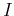 respectively.
and 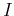 respectively.

- Z or impedance model: Given two currents and
find voltages and by:
Here all four parameters , , , and represent
impedance. In particular, and are transfer impedances,
defined as the ratio of a voltage (or ) in one part of a network to
a current (or ) in another part
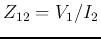. is a 2
by 2 matrix containing all four parameters.
- Y or admittance model: Given two voltages and ,
find currents and by:
Here all four parameters , , , and represent
admittance. In particular, and are transfer admittances.
is the corresponding parameter matrix.
- A or transmission model: Given and , find
and by:
Here and are dimensionless coefficients, is impedance
and is admittance. A negative sign is added to the output current
in the model, so that the direction of the current is out-ward, for easy
analysis of a cascade of multiple network models.
- H or hybrid model: Given and , find and by:
Here and are dimensionless coefficients, is impedance
and is admittance.
Generalization to nonlinear circuits
The two-port models can also be applied to a nonlinear circuit if the
variations of the variables are small and therefore the nonlinear behavior
of the circuit can be piece-wise linearized. Assume is a nonlinear
function of variables 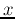 and  . If the variations
. If the variations  and
are small, the function can be approximated by a linear
model
and
are small, the function can be approximated by a linear
model
with the linear coefficients
Finding the model parameters
For each of the four types of models, the four parameters can be found
from variables , , and of a network by the following.
- For Z-model:
- For Y-model:
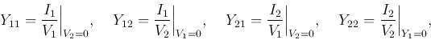
- For A-model:
- For H-model:
If we further define
then the Z-model and Y-model above can be written in matrix form:
Example:

Find the Z-model and Y-model of the circuit shown.
- First assume , we get
- Next assume , we get
The parameters of the Y-model can be found as the inverse of :
Note:
Combinations of two-port models
- Series connection of two 2-port networks:
- Parallel connection of two 2-port networks:
- Cascade connection of two 2-port networks:

Example: A The circuit shown below contains a two-port network (e.g., a
filter circuit, or an amplification circuit) represented by a Z-model:
The input voltage is
with an internal impedance
and the load impedance is . Find the two voltages
, and two currents , .

Method 1:
- First, according the Z-model, we have
- Second, two more equations can be obtained from the circuit:
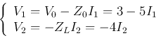
- Substituting the last two equations for and into the
first two, we get
- Solving these we get
- Then we can get the voltages
Method 2: We can also use Thevenin's theorem to treat everything before
the load impedance as an equivalent voltage source with Thevenin's voltage
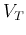 and resistance  , and the output voltage and current
can be found.
, and the output voltage and current
can be found.
- Find with voltage
 short-circuit:
short-circuit:
- The Z-model:
- Also due to the short-circuit of voltage source , we have
- equating the two expressions for , we get
- Substituting this into the equation for above, we get
- Find :
- Find open-circuit voltage with :
- Since the load is an open-circuit, , we have
- Find :
Solving this to get
- Find open-circuit voltage :
- Find load voltage :
- Find load voltage :
Principle of reciprocity:

Consider the example circuit on the left above, which can be simplified
as the network in the middle. The voltage source is in the branch on the
left, while the current is in the branch on the right, which
can be found to be (current divider):
We next interchange the positions of the voltage source and the current,
so that the voltage source is in the branch on the right and the current
to be found is in the branch on the left, as shown on the right of the
figure above. The current can be found to be
The two currents and are exactly the same! This
result illustrates the following reciprocity principle, which can
be proven in general:
In any passive (without energy sources),
linear network, if a voltage applied in branch 1 causes a current in
branch 2, then this voltage applied in branch 2 will cause the same current
in branch 1.
This reciprocity principle can also be stated as:
In any passive, linear network, the transfer impedance is equal
to the reciprocal transfer impedance .
Based on this reciprocity principle, any complex passive linear network can
be modeled by either a T-network or a -network:
- T-Network Model:

From this T-model, we get
Comparing this with the Z-model, we get
Solving these equations for 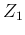,  and 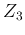, we get
and 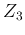, we get
- -Network Model:

From this -model, we get:
Comparing this with the Y-model, we get
Solving these equations for , and , we get
Example 1: Convert the given T-network to a network.

Solution: Given ,  , 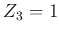, we get its Z-model:
, 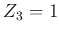, we get its Z-model:
The Z-model can be expressed in matrix form:
This Z-model can be converted into a Y-model:
This Y-model can be converted to a network:
These admittances can be further converted into impedances:
The same results can be obtained by Y to delta conversion.
Example 2: Consider the ideal transformer shown in the figure below.
Assume , , and the turn ratio is 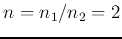.
Describe this circuit as a two-port network.

- Set up basic equations:
- Rearrange the equations in the form of a Z-model. The second equation is
Substituting into the first equation, we get
The Z-model is:
As
, this is a reciprocal network.
Alternatively, we can set up the equations in terms of the currents:
-
- Rearrange the equations in the form of a Y-model. The first equation is
- Substituting into the second equation, we get
The Y-model is:
Finally, we can verify that
Next: Active Circuits
Up: Chapter 2: Circuit Principles
Previous: Network Theorems
Ruye Wang
2014-09-24

![\begin{displaymath}\left[\begin{array}{cc}Y_{11}&Y_{12}\\ Y_{21}&Y_{22}\end{arra...
...a L\\
-1/j\omega L & j\omega C+1/j\omega L\end{array}\right] \end{displaymath}](img298.png)